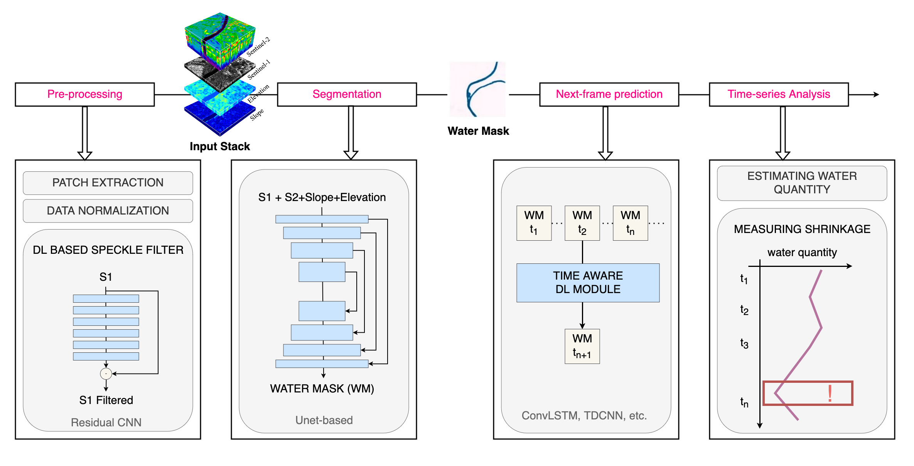

Climate change and increasing droughts pose significant challenges to water resources management worldwide. These issues lead to severe water shortages, threatening ecosystems, agriculture, and human communities. To advance the fight against these challenges, we present a new dataset, SEN12-WATER, along with a benchmark using a novel end-to-end Deep Learning (DL) framework for proactive drought-related analysis. The dataset, identified as a spatiotemporal datacube, integrates SAR polarization, elevation, slope, and multispectral optical bands. Our DL framework enables the analysis and estimation of water losses over time in reservoirs of interest, revealing significant insights into water dynamics for drought analysis by examining temporal changes in physical quantities like water volume. Our methodology leverages the multitemporal and multimodal characteristics of the proposed dataset, enabling robust generalization and advancing drought understanding, contributing to climate change resilience and sustainable water resource management. The proposed framework involves, among the several components, speckle noise remove from SAR data, a water body segmentation through a U-Net architecture, the time series analysis and the predictive capability of a Time Distributed-Convolutional Neural Network (TD-CNN). Results are validated through ground truth data acquired on-ground via dedicated sensors and (tailored) metrics, such as Precision, Recall, Intersection over Union, Mean Squared Error, Structural Similarity Index Measure and Peak Signal-to-Noise Ratio.
The gallery below presents results on three areas of interest, putting in comparison one our model and the ground thruth. Use the slider and gestures to reveal details on both sides.
Proposed end-to-end framework and methodology composed of several blocks: segmentation of water basins, prediction of future water and drought masks and evaluation of the quantity of water pixels within each segmented mask.
@InProceedings{sen12water2024,
title={SEN12-WATER: A New Dataset for Hydrological Applications and Its Benchmarking},
author={Russo, Luigi and Mauro, Francesco and Sebastianelli, Alessandro and Gamba, Paolo and Ullo, Silvia},
journal={Transactions on Geoscience and Remote Sensing},
publisher={IEEE}
year={2024}
}